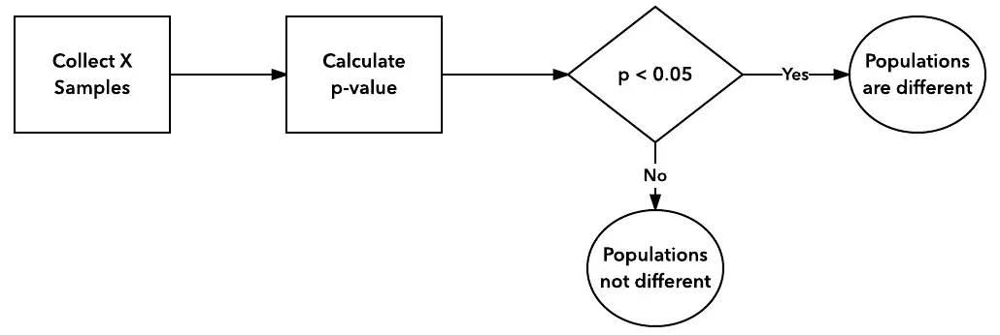
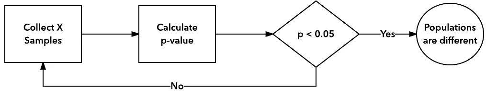
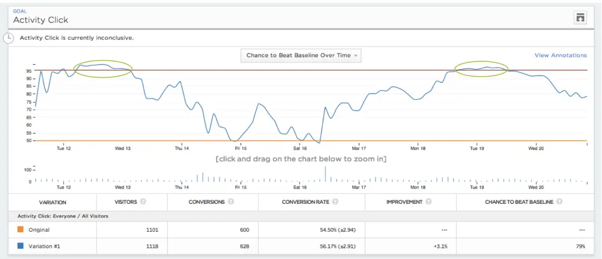

偷看是ab测试中最常遇到的问题，本文将说明影响，分析用户为什么偷看，探讨如何应对。
背景
大部分ab测试系统使用固定水平检验。 实验设计阶段，需要预设结束条件：
1. 检验过程与假设相符。
例如研究AB群体年收入是否不同，实验就不应该在运行半年时结束。比如A人群高月薪低年终奖，B人群低月薪高年终奖，半年结果离最终结果相去甚远；
2. 样本量预定。
根据预设假阳性假阴性水平、最小观测变化，算出需要多少样本。在未达到预设样本量之前，不应该结束（样本量选择）。
提前、延后停止实验，都会导致实验结果不可信。

偷看对实验影响
只是“看”，不对实验进行任何干预，扔按预定结束条件为准，偷看不会影响实验结论的可靠性。
但是很多情况下我们无法抵抗诱惑，当实验似乎很明显时，我们总会干预实验。于是实验流程发生了改变，从而更容易显著（假阳性上升）。实验的过程中充满随机，偷看容易陷入无意义的分析。 
让我们看下图，一个真实的例子。  图中纵坐标代表对照组好于实验组的P值。看起来曲线纵坐标大致都位于50%以上，甚至有超过95%阈值的时刻。可以说明B方案优于A方案么？
然而这个例子只是单纯的“AA”实验，AB方案没有任何不同，曲线只是随机波动。
如果我们不看过程，只看结果，终点并不能说明一个方案显著优于另一个。
为什么要偷看
a. 我们有偷看的需求
- 及时止损，尽早结束失败（有害）的实验；
- 扩大胜利成果，尽早发现成功的实验。
b. 存在允许偷看的客观条件
固定水平检验产生在大约100年前。我们来看下当年与现代的对比。
100年前：
- 数据成本高、收集缓慢
著名的统计学家费希尔，使用假设检验对农业进行研究。作物的生长周期是很难改变的，无法预知结果…数据的采集、计算依赖人力。
- 对操作者要求高
实验者是经过训练的专家。
现在：
- 数据及时、廉价 科技降低了数据获取的成本，可以研究更精细的事物。互联网业采集、分析用户行为已经越来越成熟。 - 人人都可以是操作者 在成熟ab测试平台上，实验者可以轻松进行实验，也更容易在实验分析中犯错。
c. 实验平台模板不适合
实验平台提供了固定的模板，以及在此模板下的终止条件，常见为限定实验周期、分析单位等，并以此得到结束条件。
固化的模板不能通用于所有的实验，因此用户自己判断是否停止也不足为奇。
平台需要增强实验个性化的能力。
如何避免？
不偷看
这是最简单可靠的方案，但是经常很困难。参考以下场景：
大佬：B方案显著正面了，上线了吧
小弟：不行，我们还需要再等三天大佬：B方案负面显著了，快回滚
小弟：还需要等三天……大佬：这个方案竟然不显著？在跑几天！
小弟：不行，我们已经达到停止条件了
非固定水平检验
比如贯序检验系列方法，他们一般掌握成本更高，过程更复杂。由于结束条件改变了，并不一定会比固定水平检验更快结束。 Optimizely采用了这种方案，过程中用户可以偷看，每次平台提供可靠的P值与置信区间，整个过程后假阳性依然控制在预定水平。
使用非检验方法
有时我们不需要解释，只是希望得到最好的组合，这种问题为multi-armed bandit problem，已经有很多相关的研究。
总结
偷看的需求是可以理解的，很多情况下甚至是合理的，但要确保使用的工具、方法允许这样做。如果实验平台方法算法不支持偷看，就应该克制自己提前干扰实验的冲动，否则无法得到可靠的结论。